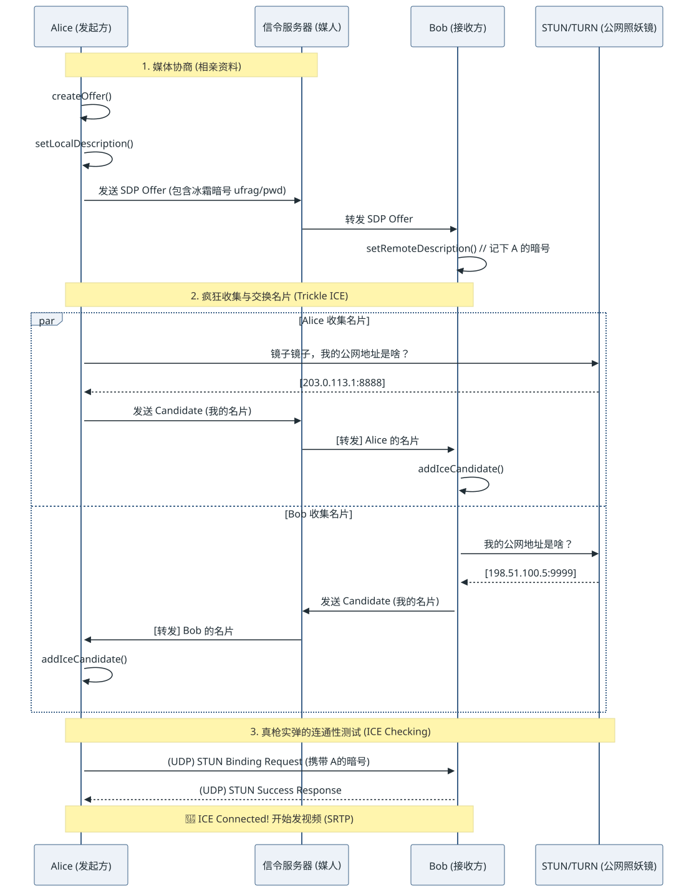

- 01收集候选host / srflx / relay
- 02信令交换SDP 与 Trickle ICE
- 03连通性检查候选对 STUN 检查
- 04提名选路进入 connected 状态
题记 上一篇文章里，我们用“小区保安”的视角理解了内网穿透的物理困境。但在真实的开发排错中，当我们打开 Chrome 的
webrtc-internals或者看底层日志时，满屏的a=candidate和天书一样的字符串往往让人两眼一黑。要想真正掌握排错灵感，我们必须扒开它的衣服，看透它在信令层和网络层到底干了什么。
在标准的面渣中，“ICE 收集 -> 交换 SDP -> 打洞” 往往被一笔带过。但今天，我们要把这套极致复杂的流程，映射成你能一眼看懂的**“双边相亲与核对暗号”**的物理直觉。
一、 宏观战场：一张图看懂 ICE 连通的真面目
ICE 的建联其实分为两个完全不同的位面：信令层（传纸条） 与 媒体层（真刀真枪干）。
请看下面这张时序图映射：

查看图解源文本
sequenceDiagram
participant A as Alice (发起方)
participant S as 信令服务器 (媒人)
participant B as Bob (接收方)
participant STUN as STUN/TURN (公网照妖镜)
Note over A, S: 1. 媒体协商 (相亲资料)
A->>+A: createOffer()
A->>A: setLocalDescription()
A->>S: 发送 SDP Offer (包含冰霜暗号 ufrag/pwd)
S->>B: 转发 SDP Offer
B->>+B: setRemoteDescription() // 记下 A 的暗号
Note over A, B: 2. 疯狂收集与交换名片 (Trickle ICE)
par Alice 收集名片
A->>STUN: 镜子镜子，我的公网地址是啥？
STUN-->>A: [203.0.113.1:8888]
A->>S: 发送 Candidate (我的名片)
S->>B: [转发] Alice 的名片
B->>B: addIceCandidate()
and Bob 收集名片
B->>STUN: 我的公网地址是啥？
STUN-->>B: [198.51.100.5:9999]
B->>S: 发送 Candidate (我的名片)
S->>A: [转发] Bob 的名片
A->>A: addIceCandidate()
end
Note over A, STUN: 3. 真枪实弹的连通性测试 (ICE Checking)
A->>B: (UDP) STUN Binding Request (携带 A的暗号)
B-->>A: (UDP) STUN Success Response
Note over A, B: 🎉 ICE Connected! 开始发视频 (SRTP)
从这张图你可以看到一个极其反直觉的事实：
很多人认为 SDP 里就包含了地址。其实在现代 WebRTC (Trickle ICE) 里，SDP 往往只负责交换**“媒体能力（我能解H264）”和“暗号（ufrag/pwd）”**。而真正的地址名片（Candidate），是像滴水一样，找到一个就通过信令服传一个的。
二、 破解天书：Candidate 里的参数到底在说什么？
当你查阅抓包或者日志，你一定会看到类似这样一行天书般的信息：
a=candidate:12345678 1 udp 2113929471 203.0.113.1 8888 typ srflx raddr 192.168.1.5 rport 5555
不要慌！我们这就把它大卸八块，用物理直觉翻译出来：
| 参数碎片 | 真实面孔 | 物理学隐喻翻译 |
|---|---|---|
candidate: |
前缀声明 | “喂！这是一张我的新名片！” |
12345678 |
Foundation (基础标识) | 名片归属码。同一个 IP+端口不管试几次，这个号是一样的。 |
1 |
Component ID (组件ID) | 左耳还是右眼。早期 RTP 管视频（1），RTCP 管控制（2）。现在开了 Multiplex，大家全用 1。 |
udp |
协议组 | 交通工具。走 UDP（汽车）还是 TCP（高铁）。 |
2113929471 |
Priority (优先级) | VIP 排序号码。数字越大越优先（一般 Host > Srflx > Relay）。ICE 在排列组合打洞时，会先挑数字大的试。 |
203.0.113.1<br/>8888 |
外网 IP 与端口 | 快递最终投递地。别人按这个地址发包，就能砸到你。 |
typ srflx |
Type (名片类型) | 名片的成色。<br/>host：内网本机直连；<br/>srflx：STUN 反射的公网地址；<br/>relay：TURN 中转站代收地址。 |
raddr 192...<br/>rport 5555 |
反射真实内网地 | 发件人真实底细。这个包其实是从你内网 192 这个主机上出来的。 |
🔑 最核心的防伪暗号：ufrag 与 pwd
在 SDP 交换时，除了交换上面的地址，你们还会交换 ice-ufrag 和 ice-pwd。
物理比喻：网络是不安全的，我怎么知道向我发 UDP 洞洞包的人真的是你，而不是黑客伪造的攻击流？
解法：你在给我发 STUN Ping（连通性测试）时，不仅要往我这里砸，还得在包头里贴上我的 ufrag，并用我的 pwd 对包做哈希签名！我对过了暗号没错，才相信这真的是你在尝试连我。
三、 骨架映射：WebRTC 极简 C++ / JS 伪代码
我们来看真实的 API 调用逻辑，是如何一步步驱动上面那个业务流程的。这次我们贴近真实的编程直觉：
// 伪代码：一段标准且最健壮的 WebRTC 连线逻辑
const pc = new RTCPeerConnection({
iceServers: [ { urls: "stun:stun.l.google.com:19302" } ] // 给你一面照妖镜
});
// ================== [左半区：我在收集名片，准备发给别人] ==================
// 💡 物理触发点：只要执行了 setLocalDescription，底层就会疯狂向 STUN/TURN 要地址
pc.setLocalDescription(offer);
// 每当底层找到一个新门牌号（Candidate），就会高呼回调
pc.onicecandidate = (event) => {
if (event.candidate) {
// 🚨 Trickle ICE 精髓：捡到一个就立马发给信令服务器！绝不攒着！
SignalingChannel.send({ type: 'candidate', data: event.candidate });
} else {
// 当返回 null，说明底下老底都被掏干了（Gathering Complete）
console.log("所有能找到的名片都找完了！");
}
};
// ================== [右半区：别人发来他的名片，我赶紧存进通讯录] ==================
// 💡 物理动作：从信令服务器（如 WebSocket）收到对方正在滴答扔过来的名片
SignalingChannel.onReceive((message) => {
if (message.type === 'candidate') {
// 💥 关键点：把刚拿到的传单塞进底层状态机
// 底层一旦发现有一对 (local, remote) 地址就绪，就会立刻暗中发射 STUN Ping！
pc.addIceCandidate(new RTCIceCandidate(message.data));
}
});
// ================== [监工区：监控打洞战局状态] ==================
pc.oniceconnectionstatechange = () => {
// checking -> 正在疯狂拿冲锋枪互扫（Ping/Pong 测试）
// connected -> 打穿了！第一条高架桥造好了！
// failed -> 绝望，所有的排列组合都试过了，保安太严！
console.log("当前物理架桥进度: ", pc.iceConnectionState);
};
四、 现实的妥协区 (Tradeoff) 与灵感破局
在标准流程中，新手开发者最容易陷入的一个致命陷阱就是：传统收集（Vanilla ICE） vs 滴水试联（Trickle ICE）。这也是导致大量应用“建联极慢”的根本原因。
🚨 反面教材：那些非要等“收集完成”才干活的人
很多从老旧 SIP 协议转过来的开发者，往往会写出这样的垃圾逻辑：
“我要等
pc.onicegatheringstatechange变成complete，再把包含完全体 Candidate 的 SDP 一次性发给对方。”
这种“一次到位”的执念，在公网上是毁灭性的。
- 获取
host（内网）只需要1ms。 - 去公网查
srflx（STUN）需要50ms。 - 去请求分配一个
relay（TURN）可能需要等待几百甚至上千毫秒的握手与校验。
如果你非要等，就等于所有人都在“列车停靠点”干等着，硬生生把用户的首帧画面延迟推高了 1~2 秒。
👉 治本策略：
严格遵守上面的 Trickle ICE 伪代码！信令（SDP）只传基本骨架和秘钥。后续一旦 onicecandidate 冒出一个极速的 host，就立刻抢发过去；往往第一个内网/STUN地址刚一到，底层就已经打通了。让“网络打洞”和“后续的信令交换”在时间线上彻底并行！
五、 本章总结与下回伏笔
看完这一通硬核拆解，你就会明白：ICE 绝不是什么神秘的魔法，它只是一台不知疲倦的排列组合穷举机器。 信令服务器（WebSocket）只是负责交换那些冰冷的“名片”（Candidate）与防伪验证码（ufrag/pwd）；而真正的火并，是你的电脑照着名片地址，拿带有秘钥哈希的探路石（STUN Packet）死磕防火墙。
🎯 钩子 (Next)：
好，到现在为止，你终于成功把 ICE 的状态变为了惹人喜爱的 connected。底层网络隧道算是贯通了！但这条泥泞的管道里，到底该怎么塞视频呢？这就引出了另一个协议簇：RTP (实时传输协议) 与它的保镖 RTCP。在下一章，我们将看看你的画面究竟是被切成了什么样子的碎肉，才在这条隧道中疾驰的！